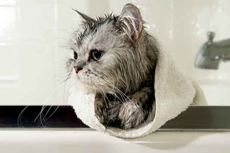

Koci niezbędnik
Pomimo że koty w większości są samowystarczalne i same potrafią przy pomocy języka i łapek wylizać oraz oczyścić swoje futerko, każdy kot wymaga szczególnej pielęgnacji i dbania o jego higienę osobistą.
Niezbędna jest odpowiednia pielęgnacja ze strony właściciela. Każdy właściciel kota musi posiadać niezbędny przybornik z artykułami do pielęgnacji kota.
Muszą się w nim znaleźć:
- Przybory do czesania:
- szczotka ze szczeciny;
- elastyczna szczotka druciana;
- gęsty grzebień;
- rzadki grzebień do wyczesywania splatanych włosów;
- nożyczki o zaostrzonych końcach do wycinania poplątanych włosów;
- cążki do przycinania pazurków;
- chlorek żelazny do tamowania krwawienia po zbyt krótkim przycięciu pazurków;
- pałeczki higieniczne do czyszczenia uszu;
- waciki do przemywania oczu i tamowania krwawienia;
- specjalny szampon dla kotów;
- puder przeciwpchelny dla kotów lub puder dziecięcy;
- ręcznik do osuszania;